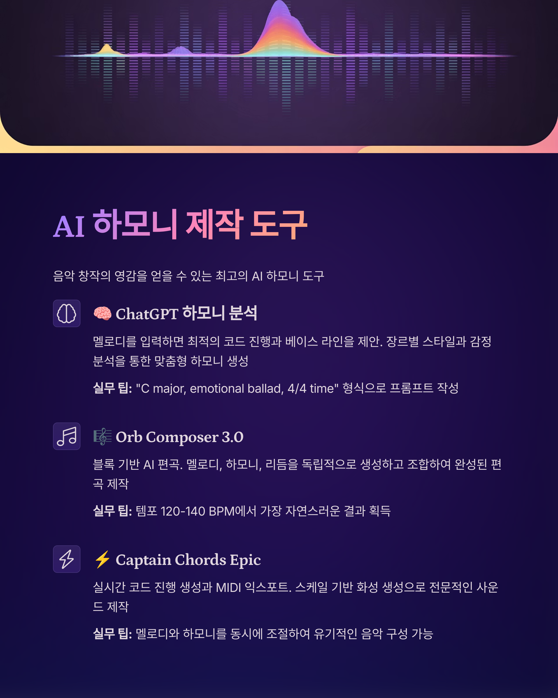

2025년 AI 편곡 생태계
AI는 편곡 과정을 근본적으로 변화시켰습니다. 단순한 코드 진행 제안을 넘어 감정 분석, 구조 최적화, 장르별 특성 반영까지 가능한 지능형 편곡 도구들이 등장했습니다.
🧠 ChatGPT 하모니 분석
멜로디를 입력하면 최적의 코드 진행과 베이스 라인을 제안. 장르별 스타일과 감정 분석을 통한 맞춤형 하모니 생성
실무 팁: "C major, emotional ballad, 4/4 time" 형식으로 프롬프트 작성
🎼 Orb Composer 3.0
블록 기반 AI 편곡. 멜로디, 하모니, 리듬을 독립적으로 생성하고 조합하여 완성된 편곡 제작
실무 팁: 템포 120-140 BPM에서 가장 자연스러운 결과 획득
⚡ Captain Chords Epic
실시간 코드 진행 생성과 MIDI 익스포트. 스케일 기반 화성 분석으로 이론적으로 정확한 편곡
실무 팁: Circle of Fifths 모드로 자연스러운 전조 구현
🎹 Scaler 2 + AI
스케일과 코드 이론을 AI와 결합. 감정 분석 기반 스케일 추천과 모달 인터체인지 자동 적용
실무 팁: "Suggest" 모드에서 창의적 아이디어 발견
🎯 AI 편곡 워크플로우 단계별 가이드
- 1단계 - 구조 분석:
- 기존 곡 구조 AI 분석 (ChatGPT)
- 장르별 표준 구조 템플릿 추천
- 클라이맥스 지점과 브리지 위치 최적화
- 2단계 - 하모니 생성:
- 멜로디 기반 코드 진행 자동 생성
- 장르별 특징적 화성 진행 적용
- 텐션과 리졸브 최적화
⚡ 실시간 편곡 기법
- 라이브 잼 세션:
- AI 기반 반주 자동 생성
- 연주자 스타일 학습과 적응
- 실시간 화성 분석과 제안
- 협업 편곡:
- 여러 아이디어 실시간 조합
- 투표 시스템을 통한 최적안 선택
- 클라우드 기반 동시 편집
💡 프로 편곡가의 AI 활용 노하우
AI는 아이디어 제공자로 활용하고, 최종 결정은 인간의 음악적 판단에 맡기세요. AI 제안의 30-40%를 수용하고 나머지는 창의적으로 변형하는 것이 최적의 결과를 만듭니다.
